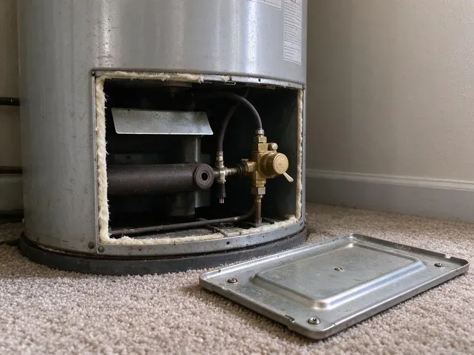
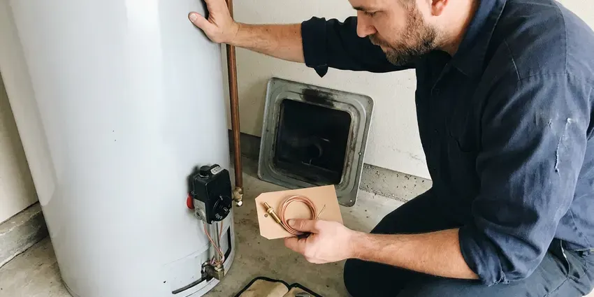
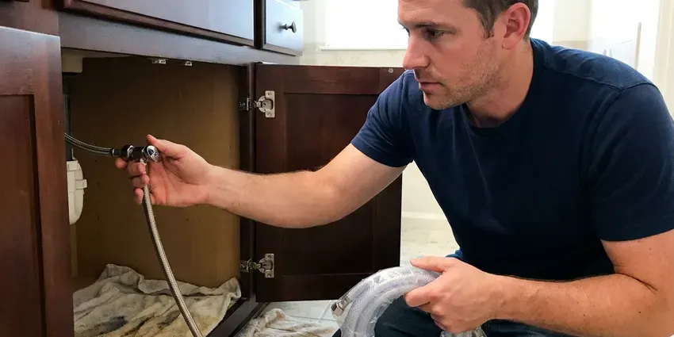

Drain Repairs in Taylor, MI
Drain repairs done right the first time for kitchens, baths, laundry rooms and floor drains across Taylor, MI.
- Quick Drain Service
- Clear Pricing
- Upfront Flat-Rate Pricing
- Licensed & Insured

Expert Drain Repairs Are Just a Call Away in Taylor, MI.
Contact CHV Plumbing today for expert drain repair services and see the difference professional care makes.
Professional Drain Repairs in Taylor, MI for Every Fixture
At CHV Plumbing, we understand the urgency of drain issues in Taylor, MI. We offer full-service drain repair, handling everything from corrosion and tree root intrusion to shifting ground and pipe collapses, so your plumbing system operates smoothly.
Our expertise includes:
- Cast iron and ABS drain section replacement inside walls
- P-trap, tailpiece and slip-joint replacement under sinks and vanities
- Hydro-jetting for stubborn clogs and buildup

Additional Plumbing Repair Services in Taylor, MI
We offer expert plumbing repair services across Taylor, MI to fix leaks, restore flow, and keep your system running smoothly.


Professional water heater repair, Taylor


Taylor water leak repair specialists


Customers
Why Choose CHV Plumbing for Drain Repairs in Taylor, MI?
Our plumbers keep a full stock of traps, fittings, couplings and pipe on the truck. That means fewer return trips and quicker repairs for you.
- Stocked Trucks, Common drain parts in ABS, PVC and brass are on hand for first-visit repairs.
- Advanced Tools, We use state-of-the-art equipment like video inspection cameras and hydro-jetting machines for precise diagnostics and effective repairs.
- Cause Not Symptom, We find out why the drain fails instead of just pushing the clog deeper into the line.
Citywide Coverage
CHV Plumbing proudly serves every neighborhood and surrounding community in Taylor, so no matter where you are, expert drain repair services are just a call away. We make it a point to be available when you need us most, understanding that drain issues can't wait.
Experienced Team
Our technicians have repaired every kind of drain, from a simple leaking trap to a cracked cast iron stack inside a wall. They know how hard water and grease build up in plumbing and how to fix it for good.
Safety-First Approach
We always put first the safety and integrity of your property during any drain repair. All work is done in compliance with current plumbing codes, preventing potential hazards and ensuring a safe, functional plumbing system for your Taylor home or business.
Trusted Certified Taylor Plumbing Services Professionals
At CHV Plumbing, we take pride in providing certified plumbing services throughout Taylor, MI. Backed by leading industry credentials, our experienced plumbers combine technical skill with genuine customer care. Whether it is repair, installation, or maintenance, we follow strict safety and quality standards to deliver lasting results you can trust.
Call Us Now PHCC Plumbing Contractor Recognition
PHCC Plumbing Contractor Recognition Better Business Bureau (BBB) Accreditation
Better Business Bureau (BBB) Accreditation Angi Certified Pro
Angi Certified Pro ISO 9001 Quality Management Certification
ISO 9001 Quality Management CertificationDependable Drain Repair Services in Taylor, MI
Emergency Drain Repairs in Taylor, MI
A sudden drain backup or major leak is an emergency that needs immediate attention. CHV Plumbing offers emergency drain repair services around the clock in Taylor, MI. We understand that severe drain issues can rapidly lead to extensive property damage and health hazards. Our emergency team is equipped to handle burst pipes, severe clogs and main line backups, providing fast diagnosis and effective, urgent repairs to restore safety and function.

Clogged Drain Repair in Taylor
Stubborn clogs are a common issue, usually caused by grease, hair, food particles or mineral buildup from hard water. We use specialized tools like augers, snakes and hydro-jetting to break down and remove blockages effectively. Our technicians can pinpoint the exact location of the clog using camera inspections, for a targeted and efficient repair without unnecessary disruption. We address clogs in kitchen sinks, bathroom drains, utility sinks and main sewer lines, restoring proper flow.
Commercial Drain Repair in Taylor
Restaurants, salons, offices and medical suites all need drains that keep working during business hours. We repair grease-laden kitchen lines, floor sinks, mop sink drains and restroom fixtures. We can schedule work early or after closing to keep your doors open. Our team also helps you set up a maintenance plan so problems are caught before they interrupt service.
Drain Vent Repair in Taylor, MI
A properly functioning drain vent system is key for smooth drainage and preventing sewer gas odors. If you notice gurgling sounds or slow drains in Taylor, MI, it could point to a blocked or damaged vent pipe. We diagnose and repair vent issues, restoring proper airflow so your plumbing system operates as it should.
Emergency Drain Repair in Taylor, MI
A drain line that bursts under a sink or inside a wall can soak cabinets and flooring fast. When you call with an active leak, we prioritize the visit and help you stop the flow until we arrive. Once there, we isolate the damaged section and make a permanent repair whenever possible. If drywall or flooring is wet, we let you know so you can address it before mold sets in.
Bathroom Drain Repair in Taylor
Bathroom drains, including sinks, showers and tubs, frequently get clogged with hair, soap residue and hygiene products. Our team in Taylor provides prompt repair services for these common problems, clearing blockages and fixing leaks. We also handle more complex issues like faulty pop-up stoppers or worn-out P-traps.
Leaking Drain Pipe Repair in Taylor, MI
Leaking drain pipes can cause serious water damage and mold growth if not addressed promptly. Causes often include corrosion, shifting foundations or damage from root intrusion. CHV Plumbing performs precise leak detection using acoustic and thermal imaging equipment. We repair leaks by patching small holes or replacing damaged sections of PVC, cast iron or copper piping, leaving a watertight seal. Our repairs meet all local plumbing codes.

Drain Repair Cost Comparison in Taylor, MI
A trap or slip-joint repair is one of the least expensive plumbing jobs and is often done in under an hour. Replacing a section of branch drain in an open wall or crawlspace costs more but is still a small repair. Opening finished walls or replacing a full stack is the most involved option. We explain each choice and its price so you can decide with confidence.
Drain Repairs Near Me in Taylor, MI
We pride ourselves on being the go-to local choice for drain repairs, offering efficient service without long wait times. Our close proximity means we can send a skilled plumber to your location in Taylor faster, minimizing the inconvenience and potential damage caused by drain issues. Contact us for local expertise you can count on.
Our local presence in Taylor means we understand the plumbing challenges faced by homes and businesses in the area. Whether you're dealing with a minor clog or a major pipe repair, our team is always nearby and ready to deliver top-quality drain repair solutions.
CHV Plumbing at a Glance
- Fully licensed plumbing team covering Taylor, MI
- Same-day appointments and 24/7 emergency response
- Upfront, flat-rate pricing before work begins
- 4.9-star rated by 670+ Michigan customers
Taylor Map
Taylor Information
- Population
- 61,241
- Area codes
- 734/248/586
- Service area
- Taylor and communities within 40 miles
- Nearby
- Dearborn, Dearborn Heights, Westland, Livonia
Effective drain repairs are important in Taylor, MI because soil movement can stress underground pipes and tree roots can invade older lines, leading to repeat blockages and pipe damage. Basements are the norm, so sump pumps, drain tile and perimeter drains are a big part of residential plumbing.
Expert Services
Trust our professionals for reliable CHV Plumbing solutions in Taylor, MI.
Our Specialized Plumbing Services in Taylor, MI
At CHV Plumbing, we provide a complete range of plumbing services across Taylor, MI. From leak detection to full system installations, our team ensures fast, precise, and affordable service for both residential and commercial properties. Explore our core services below:


How Our Drain Repair Process Works in Taylor, MI
Our drain repair process is designed to be simple and efficient, minimizing disruption to your home or business in Taylor.
Request a Quote
Call (810) 380-5918 and describe which drain is giving you trouble and how long it has been happening. We will schedule a visit, often the same day.
Diagnose the Drain
We inspect the trap, pipe and vent and run a camera if the problem is deeper in the line. You get a clear explanation and a fixed price.
Repair and Flow Test
We replace or repair the failed parts and run water at full volume to confirm the drain works. We check for leaks and clean the area before we go.
Frequently Asked Questions About Drain Repairs in Taylor
Simple trap or slip-joint repairs usually cost $150 to $350. Replacing a section of drain pipe usually runs $400 to $1,200, and cast iron stack replacement can range from $2,000 to $6,000 depending on access. We provide a written price before starting.
It can. Well water across much of the state tends to be harder and often carries iron, which stains sinks and clogs aerators. Where water is hard, calcium scale builds up inside drain pipes, especially near showers and laundry lines. Over time it narrows the pipe and traps debris, which is why periodic cleaning and timely repairs matter.
CHV Plumbing stands behind our work. We offer a warranty on our drain repair services, which varies depending on the type of repair and parts used. Our technicians will provide details on the exact warranty that applies to your service.
Tightening a loose slip nut or replacing a plastic trap is a fair DIY job. If the leak is from a cracked tailpiece, a corroded metal drain or inside a wall, a plumber can make a lasting repair and check for hidden damage.
The duration of drain repairs depends entirely on the issue. A simple clog can often be cleared in an hour or two. More involved repairs, like replacing a section of a main sewer line, might take a full day or even several days, especially if permits or extensive digging are involved.
Harsh chemical cleaners can soften older ABS glue joints and corrode metal drain parts with repeated use. They also rarely clear grease or scale fully. A mechanical auger or hydro-jet is safer and more effective.
To prevent future drain problems, avoid pouring grease down sinks, use drain screens to catch hair and food particles and be mindful of what goes down your toilets. Regular professional drain cleaning every one to two years can also help prevent clogs and extend the life of your plumbing system.
We work with all standard drain pipe materials found in Michigan homes, including PVC, ABS, cast iron and copper. Our repairs and replacements use high-quality, code-compliant materials from reputable manufacturers for durability and longevity.
What People Are Saying About Our Plumbing Experts?

James P.
Our commercial plumbing system had a leak under the sink, and CHV Plumbing handled it professionally. The plumbers arrived quickly and restored everything without disruption to our customers.
Commercial Plumbing · Detroit, MI
Daniel K.
A pipe burst at 11 pm and they actually answered. The plumber showed up within the hour, shut everything down, and had us back to normal the next morning. Could not ask for more.
Emergency Plumbing · Dearborn Heights, MI
Sofia M.
Two new toilets installed in one visit, no mess left behind, and the tech even adjusted a faucet he noticed was dripping. Fair pricing and really friendly.
Toilet Installation · Westland, MI
Emily R.
I called CHV Plumbing for plumbing repair, and the technician was fast, polite, and thorough. They explained the problem clearly and fixed it the same day. I will definitely hire them again. Highly recommended!
Plumbing Repair · Taylor, MI
Patricia H.
We had a slab leak that two other companies could not find. CHV Plumbing located it in under an hour, explained our options, and the price matched the quote to the dollar.
Slab Leak Repair · Westland, MIRobert G.
The trenchless sewer replacement saved our front yard. They walked us through the camera inspection footage first so we knew exactly what we were paying for.
Sewer Line Replacement · Detroit, MI